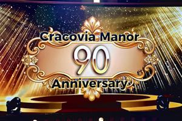

Photos
Sashing Ceremony Highlights
Photos from 2025 and 2026 Grand Marshal and Miss Polonia sashing ceremonies. Photos by Beata Kruzel.


Sashing ceremonies, banquets, meetings, and the big parade — all in one place.
Holy Cross Parish, School Hall · 56-01 61st Street, Maspeth, NY 11378 | Full 2026 Meeting Schedule PDF →
The Historic Old Bermuda Inn, 301 Veterans Road West, Staten Island, NY 10309
Russo's on the Bay, 162-45 Cross Bay Blvd, Howard Beach, NY 11414
Holy Cross Parish, School Hall · 56-01 61st Street, Maspeth, NY 11378
Royal Manor, 454 Midland Ave., Garfield, NJ
St. John Paul II Hall at St. Theresa Church, 131 E. Edgar Rd., Linden, NJ
184 Metropolitan Ave., Brooklyn, NY
St. Casimir Parish, 91 Pulaski Street, Newark, NJ
Our Lady Queen of Peace Church, 1911 Union Valley Road, Hewitt, NJ
Carleton Hall, 103 Carleton Ave., East Islip, NY 11730
62-22 61st Street, Ridgewood, NY 11385
Stamford, Connecticut
Rockland County, New York
5th Avenue, New York City — starting at 5th Ave & 41st Street
Photos from 2025 and 2026 Grand Marshal and Miss Polonia sashing ceremonies. Photos by Beata Kruzel.

1935–2025, Wallington, NJ — Celebrating 90 years of Polish-American community heritage.
27th Annual Dinner Dance & Scholarship Awards
AnnaMaria Anders, Konsulat Generalny RP w Nowym Jorku — Nagroda Wybitna Polka
Doylestown, PA — Cardinal Stanisław Dziwisz
Wacław Jędrzewicz History Award → Prof. Andrzej Chwalba
Ignacy Paderewski Arts Award → Dr. Magdalena Baczewska
Joseph Conrad Literature Award → Wojciech Wencel
NYC Mayor's Residence honored Dr. Iwona Korga & Zygmunt Bielski.
October 11, 2025 — Annual commemoration of General Pulaski's battle at Little Egg Harbor.
Polska Szkoła Dokształcająca at Our Lady of Czestochowa & St. Kazimierz Parish, Brooklyn.